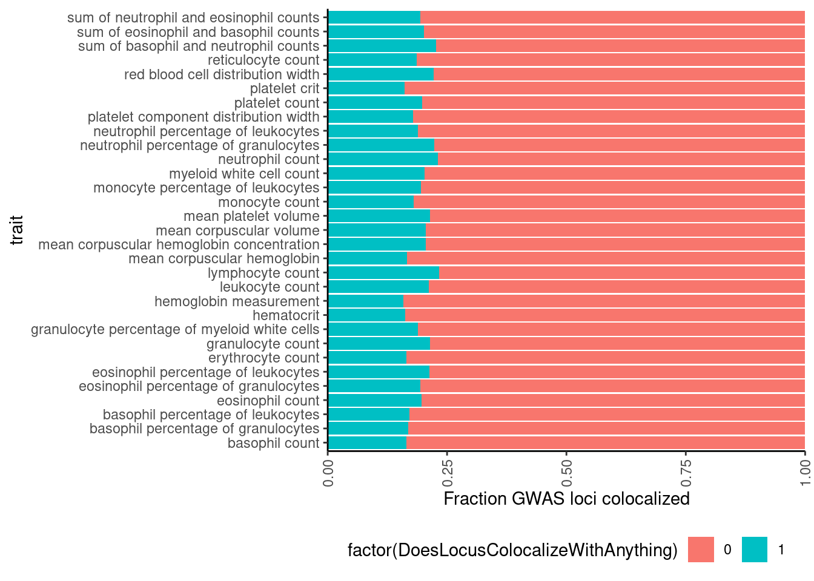
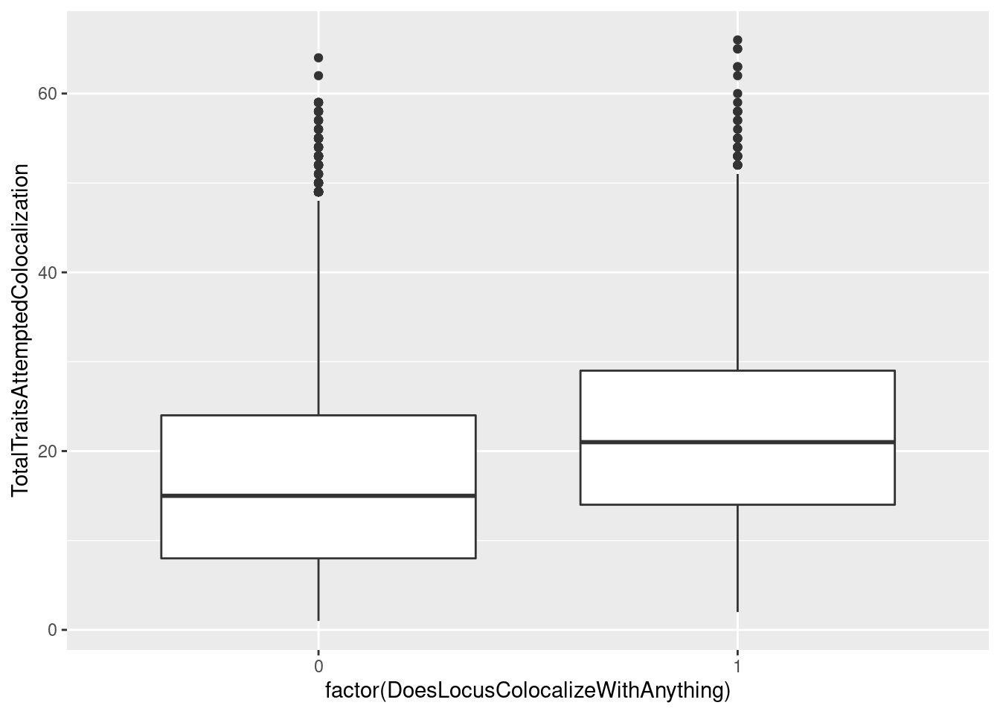
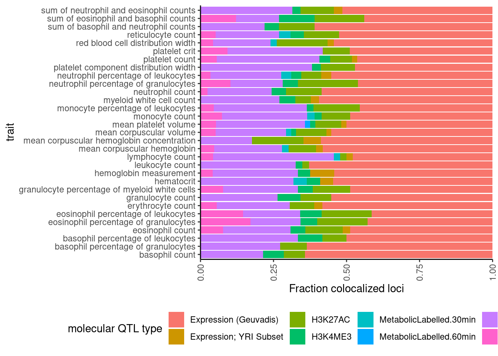

Explore GWAS colocalizations
Last updated: 2022-01-20
Checks: 6 1
Knit directory: ChromatinSplicingQTLs/analysis/
This reproducible R Markdown analysis was created with workflowr (version 1.6.2). The Checks tab describes the reproducibility checks that were applied when the results were created. The Past versions tab lists the development history.
The R Markdown file has unstaged changes. To know which version of the R Markdown file created these results, you’ll want to first commit it to the Git repo. If you’re still working on the analysis, you can ignore this warning. When you’re finished, you can run wflow_publish to commit the R Markdown file and build the HTML.
Great job! The global environment was empty. Objects defined in the global environment can affect the analysis in your R Markdown file in unknown ways. For reproduciblity it’s best to always run the code in an empty environment.
The command set.seed(20191126) was run prior to running the code in the R Markdown file. Setting a seed ensures that any results that rely on randomness, e.g. subsampling or permutations, are reproducible.
Great job! Recording the operating system, R version, and package versions is critical for reproducibility.
Nice! There were no cached chunks for this analysis, so you can be confident that you successfully produced the results during this run.
Great job! Using relative paths to the files within your workflowr project makes it easier to run your code on other machines.
Great! You are using Git for version control. Tracking code development and connecting the code version to the results is critical for reproducibility.
The results in this page were generated with repository version 0c8ee9c. See the Past versions tab to see a history of the changes made to the R Markdown and HTML files.
Note that you need to be careful to ensure that all relevant files for the analysis have been committed to Git prior to generating the results (you can use wflow_publish or wflow_git_commit). workflowr only checks the R Markdown file, but you know if there are other scripts or data files that it depends on. Below is the status of the Git repository when the results were generated:
Ignored files:
Ignored: .DS_Store
Ignored: .Rhistory
Ignored: .Rproj.user/
Ignored: ._.DS_Store
Ignored: analysis/.Rhistory
Ignored: code/.DS_Store
Ignored: code/.Rhistory
Ignored: code/._.DS_Store
Ignored: code/._README.md
Ignored: code/._dag.pdf
Ignored: code/._report.html
Ignored: code/.ipynb_checkpoints/
Ignored: code/.snakemake/
Ignored: code/Alignments/
Ignored: code/ENCODE/
Ignored: code/ExpressionAnalysis/
Ignored: code/Fastq/
Ignored: code/FastqFastp/
Ignored: code/FastqFastpSE/
Ignored: code/FastqSE/
Ignored: code/Gather_gwas_summary_stats/
Ignored: code/Genotypes/
Ignored: code/Multiqc/
Ignored: code/Multiqc_chRNA/
Ignored: code/PeakCalling/
Ignored: code/Phenotypes/
Ignored: code/PlotGruberQTLs/
Ignored: code/ProCapAnalysis/
Ignored: code/QC/
Ignored: code/QTLs/
Ignored: code/ReferenceGenome/
Ignored: code/Session.vim
Ignored: code/SplicingAnalysis/
Ignored: code/TODO
Ignored: code/bigwigs/
Ignored: code/bigwigs_FromNonWASPFilteredReads/
Ignored: code/config/.DS_Store
Ignored: code/config/._.DS_Store
Ignored: code/config/ExternalFastqDataAccessions/
Ignored: code/config/OldSamplesConfig/
Ignored: code/dag.pdf
Ignored: code/featureCounts/
Ignored: code/gwas_summary_stats/
Ignored: code/hyprcoloc/
Ignored: code/logs/
Ignored: code/notebooks/.ipynb_checkpoints/
Ignored: code/out.hap.ld
Ignored: code/out.log
Ignored: code/report.html
Ignored: code/rules/.SplicingAnalysis.smk.swp
Ignored: code/rules/OldRules/
Ignored: code/scratch/
Ignored: code/scripts/GTFtools_0.8.0/
Ignored: code/scripts/__pycache__/
Ignored: code/scripts/liftOverBedpe/liftOverBedpe.py
Ignored: code/snakemake.log
Ignored: code/snakemake.sbatch.log
Ignored: data/._PRJEB1350_RunTable.Ding_etal_CTCF.txt
Ignored: data/._igsr_samples.tsv
Ignored: data/._list_gwas_summary_statistics_PMID27863252.csv
Ignored: data/GrowthNotes/._20210830_GrowthNotes_chRNA.ConcentrationsToReplate.txt
Untracked files:
Untracked: code/scripts/LeafcutterToPSIBed.R
Untracked: code/snakemake_profiles/slurm/__pycache__/
Unstaged changes:
Modified: analysis/20211207_ExploreColocalizations.Rmd
Modified: code/Snakefile
Modified: code/rules/SplicingAnalysis.smk
Modified: code/scripts/GenometracksByGenotype
Note that any generated files, e.g. HTML, png, CSS, etc., are not included in this status report because it is ok for generated content to have uncommitted changes.
These are the previous versions of the repository in which changes were made to the R Markdown (analysis/20211207_ExploreColocalizations.Rmd) and HTML (docs/20211207_ExploreColocalizations.html) files. If you’ve configured a remote Git repository (see ?wflow_git_remote), click on the hyperlinks in the table below to view the files as they were in that past version.
| File | Version | Author | Date | Message |
|---|---|---|---|---|
| Rmd | 50ad818 | Benjmain Fair | 2021-12-07 | update site |
| html | 50ad818 | Benjmain Fair | 2021-12-07 | update site |
Introduction
This analysis is a first pass at some molecularQTL/GWAS colocalization results I performed using hyprcoloc with default settings. In brief, I took GWAS results (mostly/all from Astle et al; summary stats downloaded from GWAS catalog) and identified lead SNPs for genome wide significant loci and considered a 1MB window centered on the lead SNP. Then I had a bunch of molecular QTLs for various phenotypes collected mostly from 50-100 Yoruban-ancestry LCL samples (eg, splicing, expression, H3K27AC, etc, many of which aren’t the most interesting but I will include more interseting ones later) and attempted to colocalize any molecular QTLs that are nominally significant (permutation pass P<0.01) and intersect the 1MB GWAS locus window. All of this data processing is part of the Snakemake in this repo. Here I will explore some things about the colocalization results to better understand the basics of these results and how they are formatted.
Results
First load necessary libraries and read in colocalization results data…
library(tidyverse)── Attaching packages ────────────────────────────────── tidyverse 1.3.0 ──✓ ggplot2 3.3.3 ✓ purrr 0.3.4
✓ tibble 2.1.3 ✓ dplyr 0.8.3
✓ tidyr 1.1.0 ✓ stringr 1.4.0
✓ readr 1.3.1 ✓ forcats 0.4.0── Conflicts ───────────────────────────────────── tidyverse_conflicts() ──
x dplyr::filter() masks stats::filter()
x dplyr::lag() masks stats::lag()# table of gwas considered
gwas <- read_csv("../data/list_gwas_summary_statistics_PMID27863252.csv") %>%
select(`Study accession`, `Trait(s)`)Parsed with column specification:
cols(
`First Author` = col_character(),
`PubMed ID` = col_double(),
`Study accession` = col_character(),
`Publication date` = col_date(format = ""),
Journal = col_character(),
Title = col_character(),
`Trait(s)` = col_character(),
`Reported trait` = col_character(),
`FTP Path` = col_character(),
`Usage License` = col_character()
)# hyprcoloc results
dat <- read_tsv("../output/hyprcoloc_results/ForGWASColoc/hyprcoloc.results.txt.gz") %>%
rename(Locus=GWASLeadSnpChrom_Pos_RefAllele_AltAllele_rsID_trait) %>%
separate(Locus, into=c("GWAS.Chr", "GWAS.Pos", "GWAS.Ref", "GWAS.Alt", "GWAS.rsID", "trait"), remove=F) %>%
inner_join(gwas, by=c('trait'='Study accession')) %>%
rename(accession=trait) %>%
rename(trait=`Trait(s)`)Parsed with column specification:
cols(
GWASLeadSnpChrom_Pos_RefAllele_AltAllele_rsID_trait = col_character(),
HyprcolocIteration = col_double(),
ColocalizedTraits = col_character(),
PosteriorColocalizationPr = col_double(),
RegionalAssociationPr = col_double(),
TopCandidateSNP = col_character(),
ProportionPosteriorPrExplainedByTopSNP = col_double(),
DroppedTrait = col_character()
)head(dat)# A tibble: 6 x 15
Locus GWAS.Chr GWAS.Pos GWAS.Ref GWAS.Alt GWAS.rsID accession
<chr> <chr> <chr> <chr> <chr> <chr> <chr>
1 1_88… 1 8853597 A G rs127528… GCST0046…
2 1_88… 1 8853597 A G rs127528… GCST0046…
3 1_88… 1 8853597 A G rs127528… GCST0046…
4 1_88… 1 8853597 A G rs127528… GCST0046…
5 1_88… 1 8853597 A G rs127528… GCST0046…
6 1_88… 1 8853597 A G rs127528… GCST0046…
# … with 8 more variables: HyprcolocIteration <dbl>,
# ColocalizedTraits <chr>, PosteriorColocalizationPr <dbl>,
# RegionalAssociationPr <dbl>, TopCandidateSNP <chr>,
# ProportionPosteriorPrExplainedByTopSNP <dbl>, DroppedTrait <chr>,
# trait <chr>First question:
How many molQTL where attempted to colocalize for each GWAS locus. Some manual inspection of the output makes it clear to me that hyprcoloc either clusters colocalized traits or drops a single trait with each iteration, until there is only one trait left which won’t be included (not in dropped trait column nor the colocalized traits column). This means that I can get the total number of traits attempted to colocalize by summing the dropped traits and clustered traits for each locus and adding 1. Not adding 1 will be the number of molecular traits (not including the gwas trait itself).
dat %>%
mutate(NumTraits = str_count(ColocalizedTraits, ",") + 1) %>%
group_by(Locus) %>%
summarise(TotalTraitsAttemptedColocalization = sum(NumTraits)) %>%
ggplot(aes(x=TotalTraitsAttemptedColocalization)) +
stat_ecdf() +
ylab("cumulative fraction") +
xlab("Number molecular traits attempted to colocalize for each gwas locus") +
theme_bw()
| Version | Author | Date |
|---|---|---|
| 50ad818 | Benjmain Fair | 2021-12-07 |
Ok, a median of about 17 traits attempted to colocalize for each GWAS locus, and there are a very small fraction of traits (a percent or so it looks like) where I am only attempting to colocalizing one trait with the gwas locus.
Now, how many gwas loci have anything colocalizing with them?
# Bar plot of number of loci, filled by color if they colocalize with at least 1 molQTL
dat %>%
mutate(ColocalizedTraitsContainGWAS = str_detect(ColocalizedTraits, Locus)) %>%
group_by(Locus, trait) %>%
summarise(DoesLocusColocalizeWithAnything = sum(ColocalizedTraitsContainGWAS)) %>%
ggplot(aes(x=trait, fill=factor(DoesLocusColocalizeWithAnything))) +
geom_bar(position="stack") +
theme_classic() +
theme(axis.text.x = element_text(angle = 90, vjust = 0.5, hjust=1))
| Version | Author | Date |
|---|---|---|
| 50ad818 | Benjmain Fair | 2021-12-07 |
# Same plot but as percentage of loci
dat %>%
mutate(ColocalizedTraitsContainGWAS = str_detect(ColocalizedTraits, Locus)) %>%
group_by(Locus, trait) %>%
summarise(DoesLocusColocalizeWithAnything = sum(ColocalizedTraitsContainGWAS)) %>%
ggplot(aes(x=trait, fill=factor(DoesLocusColocalizeWithAnything))) +
geom_bar(position="fill") +
ylab('Fraction GWAS loci colocalized') +
scale_y_continuous(expand=c(0,0)) +
coord_flip() +
theme_classic() +
theme(axis.text.x = element_text(angle = 90, vjust = 0.5, hjust=1), legend.position="bottom")
| Version | Author | Date |
|---|---|---|
| 50ad818 | Benjmain Fair | 2021-12-07 |
Ok so about 20% of gwas loci colocalize with something.
I wonder if there is a correlation between whether the gwas colocalized with something versus how many molecular traits I attempted colocalization.
dat %>%
mutate(ColocalizedTraitsContainGWAS = str_detect(ColocalizedTraits, Locus)) %>%
mutate(NumTraits = str_count(ColocalizedTraits, ",") + 1) %>%
group_by(Locus, trait) %>%
summarise(DoesLocusColocalizeWithAnything = sum(ColocalizedTraitsContainGWAS),
TotalTraitsAttemptedColocalization = sum(NumTraits)) %>%
ggplot(aes(x=factor(DoesLocusColocalizeWithAnything), y=TotalTraitsAttemptedColocalization)) +
geom_boxplot()
| Version | Author | Date |
|---|---|---|
| 50ad818 | Benjmain Fair | 2021-12-07 |
yes, there is clearly a trend wherein the gwas loci that colocalize with something are ones where we attempted to colocalize with more things. To my knowledge, there isn’t really a framework for thinking about multiple test correction in the context of colocalization analysis, and I wonder about false/chance colocalizations. On the other hand, I think gwas loci with more molecular traits around them are more likely to harbor a true colocalization. Should I be thinking about multiple test correction as I interpret these results? I think this stackexchange question is relevant but I haven’t fully digested the answer. I’ll think more about that later or discuss with someone smarter than I…
Moving on… let’s see what type of molQTL tend to colocalize with the gwas loci (out of the molecular traits I attemped, obviously).
dat %>%
select(trait, Locus, ColocalizedTraits) %>%
filter(str_detect(ColocalizedTraits, Locus)) %>%
mutate(trait_families = str_replace(str_replace_all(ColocalizedTraits, ";.+?,", ""), ";.+$", "")) %>%
mutate(trait_families = str_replace(trait_families, paste0(Locus, ", "), "")) %>%
mutate(trait_families = case_when(
str_detect(trait_families, " ") ~ "More than one",
TRUE ~ trait_families
)) %>%
ggplot(aes(x=trait, fill=trait_families)) +
geom_bar(position="stack")+
ylab("Number colocalized loci") +
labs(fill="Molecular trait category") +
theme_classic() +
theme(axis.text.x = element_text(angle = 90, vjust = 0.5, hjust=1))
| Version | Author | Date |
|---|---|---|
| 50ad818 | Benjmain Fair | 2021-12-07 |
dat %>%
select(trait, Locus, ColocalizedTraits) %>%
filter(str_detect(ColocalizedTraits, Locus)) %>%
mutate(trait_families = str_replace(str_replace_all(ColocalizedTraits, ";.+?,", ""), ";.+$", "")) %>%
mutate(trait_families = str_replace(trait_families, paste0(Locus, ", "), "")) %>%
mutate(trait_families = case_when(
str_detect(trait_families, " ") ~ "More than one",
TRUE ~ trait_families
)) %>%
mutate(trait_families = recode(trait_families,
Expression.Splicing = "Expression (Geuvadis)",
Expression.Splicing.Subset_YRI = "Expression; YRI Subset",
polyA.Splicing.Subset_YRI = "Splicing; leafcutter; YRI Subset")) %>%
ggplot(aes(x=trait, fill=trait_families)) +
geom_bar(position="fill")+
ylab("Fraction colocalized loci") +
scale_y_continuous(expand=c(0,0)) +
labs(fill="molecular QTL type") +
coord_flip() +
theme_classic() +
theme(axis.text.x = element_text(angle = 90, vjust = 0.5, hjust=1), legend.position="bottom")
| Version | Author | Date |
|---|---|---|
| 50ad818 | Benjmain Fair | 2021-12-07 |
In these plots, “More than one” just means more than one thing colocalized, even if it is two different molecular traits from the same trait class (eg, two sQTLs). Maybe it would be worthwhile replotting where two different eQTLs would still just be “eQTL” rather than “more than one”.
dat %>%
select(trait, Locus, ColocalizedTraits) %>%
filter(str_detect(ColocalizedTraits, Locus)) %>%
mutate(trait_families = str_replace(str_replace_all(ColocalizedTraits, ";.+?,", ""), ";.+$", "")) %>%
mutate(trait_families = str_replace(trait_families, paste0(Locus, ", "), "")) %>%
mutate(split = str_split(trait_families, " ")) %>% # split
mutate(split = map(.$split, ~ unique(.x))) %>% # drop duplicates
mutate(split = map_chr(.$split, ~paste(.x, collapse = " "))) %>%
mutate(trait_families = case_when(
str_detect(split, " ") ~ "More than one",
TRUE ~ split
)) %>%
mutate(trait_families = recode(trait_families,
Expression.Splicing = "Expression (Geuvadis)",
Expression.Splicing.Subset_YRI = "Expression; YRI Subset",
polyA.Splicing.Subset_YRI = "Splicing; leafcutter; YRI Subset")) %>%
ggplot(aes(x=trait, fill=trait_families)) +
geom_bar(position="fill")+
ylab("Fraction colocalized loci") +
scale_y_continuous(expand=c(0,0)) +
labs(fill="molecular QTL type") +
coord_flip() +
theme_classic() +
theme(axis.text.x = element_text(angle = 90, vjust = 0.5, hjust=1), legend.position="bottom")
| Version | Author | Date |
|---|---|---|
| 50ad818 | Benjmain Fair | 2021-12-07 |
Ok the difference is pretty subtle. Maybe splicing went up a little. And that is unsurprising since splice events within a cluster covary by design, so when a sQTL trait colocalizes with GWAS, it may be common to have more than one sQTL trait colocalize.
Ok, let’s get a sense of the posterior probability values for colocalizations
dat %>%
filter(str_detect(ColocalizedTraits, Locus)) %>%
select(trait, Locus, ColocalizedTraits, RegionalAssociationPr, PosteriorColocalizationPr) %>%
ggplot(aes(x=trait, y=PosteriorColocalizationPr)) +
geom_violin() +
geom_jitter(width=0.2) +
theme_classic() +
theme(axis.text.x = element_text(angle = 90, vjust = 0.5, hjust=1))
| Version | Author | Date |
|---|---|---|
| 50ad818 | Benjmain Fair | 2021-12-07 |
Note that as recommended by the authors, we used the default posterior probability threshold of 0.25 for colocalization.
Let’s also look the proportion of the posterior probability explained by the top variant for colocalizations (which represents the HyPrColoc multi-trait fine-mapping probability).
dat %>%
filter(str_detect(ColocalizedTraits, Locus)) %>%
select(trait, Locus, ColocalizedTraits, ProportionPosteriorPrExplainedByTopSNP) %>%
ggplot(aes(x=trait, y=ProportionPosteriorPrExplainedByTopSNP)) +
geom_violin() +
geom_jitter(width=0.2) +
theme_classic() +
theme(axis.text.x = element_text(angle = 90, vjust = 0.5, hjust=1))
| Version | Author | Date |
|---|---|---|
| 50ad818 | Benjmain Fair | 2021-12-07 |
dat %>%
filter(str_detect(ColocalizedTraits, Locus)) %>%
select(trait, Locus, ColocalizedTraits, ProportionPosteriorPrExplainedByTopSNP) %>%
ggplot(aes(x=ProportionPosteriorPrExplainedByTopSNP)) +
geom_histogram() +
theme_classic()`stat_bin()` using `bins = 30`. Pick better value with `binwidth`.
| Version | Author | Date |
|---|---|---|
| 50ad818 | Benjmain Fair | 2021-12-07 |
Most top SNPs for a colocalization don’t have a very high fine-mapping probability, meaning we can’t confidently fine-map it down to a single SNP, though there are a few with very high fine mapping probability near 1. I will have to tell hyprcoloc to output more information to get a full set of credible snps (See hyprcoloc vignette, res <- hyprcoloc(betas, ses, trait.names=traits, snp.id=rsid, snpscores = TRUE);). This finemapping output could be particularly useful for future analyses to explore effects of splicing on chromatin. For example, if we have SNPs where chromatin and splicing phenotypes colocalize and there is high fine-mapping probability over splice sites it will be more reasonable to assume directionality of splicing –> chromatin effects.
Conclusions
A bunch of stuff colocalizes with something (20-30% of GWAS loci), roughly on par with expectations from other papers (eg, Mu et al). Next I will repeat molecular colocalizations for every gene (excluding GWAS summary stats) in attempt to learn more about molecular mechanisms thru colocalizing molecular phenotypes.
TODO:
- I will have to start incorporating more interesting molecular phenotypes (eg intron retention, chRNA-expression, eRNA expression, etc).
- I want to know what effect if any the molecular QTL/ GWAS ancestry mismatches has on colocalization. All these GWAS are from European descent, mostly from individuals in UKBioBank, while most all of the molecular QTL data is from Yoruban (YRI) African donors, with different LD blocks and allele frequency differences. I can look at this empirically by doing colocalizations with subsets of the GEUVADIS RNA-seq data. Perhaps I attempt colocalization with eQTL called from ~100 YRI in Geauvadis, and compare it to (two replicate) non-overlapping random subset of ~100 Central European (CEU) individuals.
- Incorporate more GWAS into this analysis. It will be nice to have some negative control GWAS like Phoenix had (eg unrelated traits whose heritbility isn’t expected to be well captured by LCLs)
sessionInfo()R version 3.6.1 (2019-07-05)
Platform: x86_64-pc-linux-gnu (64-bit)
Running under: Scientific Linux 7.4 (Nitrogen)
Matrix products: default
BLAS/LAPACK: /software/openblas-0.2.19-el7-x86_64/lib/libopenblas_haswellp-r0.2.19.so
locale:
[1] LC_CTYPE=en_US.UTF-8 LC_NUMERIC=C
[3] LC_TIME=en_US.UTF-8 LC_COLLATE=en_US.UTF-8
[5] LC_MONETARY=en_US.UTF-8 LC_MESSAGES=en_US.UTF-8
[7] LC_PAPER=en_US.UTF-8 LC_NAME=C
[9] LC_ADDRESS=C LC_TELEPHONE=C
[11] LC_MEASUREMENT=en_US.UTF-8 LC_IDENTIFICATION=C
attached base packages:
[1] stats graphics grDevices utils datasets methods base
other attached packages:
[1] forcats_0.4.0 stringr_1.4.0 dplyr_0.8.3 purrr_0.3.4
[5] readr_1.3.1 tidyr_1.1.0 tibble_2.1.3 ggplot2_3.3.3
[9] tidyverse_1.3.0
loaded via a namespace (and not attached):
[1] tidyselect_1.1.0 xfun_0.8 haven_2.3.1 lattice_0.20-38
[5] colorspace_1.4-1 vctrs_0.3.1 generics_0.0.2 htmltools_0.3.6
[9] yaml_2.2.0 utf8_1.1.4 rlang_0.4.10 later_0.8.0
[13] pillar_1.4.2 withr_2.4.1 glue_1.3.1 DBI_1.1.0
[17] dbplyr_1.4.2 modelr_0.1.8 readxl_1.3.1 lifecycle_0.1.0
[21] munsell_0.5.0 gtable_0.3.0 workflowr_1.6.2 cellranger_1.1.0
[25] rvest_0.3.5 evaluate_0.14 labeling_0.3 knitr_1.23
[29] httpuv_1.5.1 fansi_0.4.0 broom_0.5.2 Rcpp_1.0.5
[33] promises_1.0.1 backports_1.1.4 scales_1.1.0 jsonlite_1.6
[37] farver_2.1.0 fs_1.3.1 hms_0.5.3 digest_0.6.20
[41] stringi_1.4.3 grid_3.6.1 rprojroot_2.0.2 cli_2.2.0
[45] tools_3.6.1 magrittr_1.5 crayon_1.3.4 whisker_0.3-2
[49] pkgconfig_2.0.2 ellipsis_0.2.0.1 xml2_1.3.2 reprex_0.3.0
[53] lubridate_1.7.4 rstudioapi_0.10 assertthat_0.2.1 rmarkdown_1.13
[57] httr_1.4.1 R6_2.4.0 nlme_3.1-140 git2r_0.26.1
[61] compiler_3.6.1